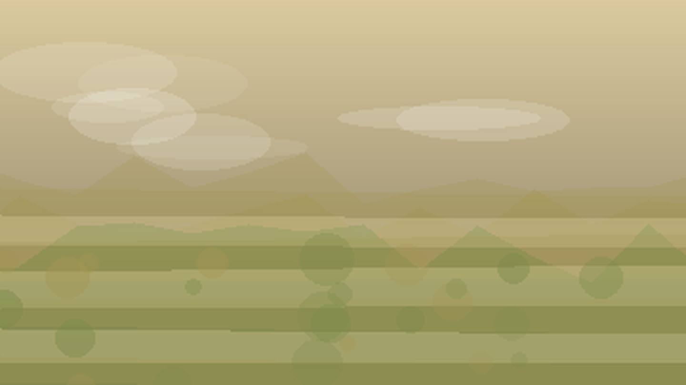

Главная / Волгоградская область

Волгоградская область
Что посадить
Что посадить
в Волгоградской области
Выберите природную зону в Волгоградской области: условия внутри региона различаются по теплу, влаге, ветру и длине сезона.
северная лесостепь: тёплая степная зона сильна для овощей, бахчевых и сада при контроле влаги. Ориентиры внутри зоны: Урюпинск, Михайловка.
Открыть страницу зоны → центральная степьцентральная степь: тёплая степная зона сильна для овощей, бахчевых и сада при контроле влаги. Ориентиры внутри зоны: Волгоград, Камышин.
Открыть страницу зоны → южная сухая степьюжная сухая степь: сухая степь раскрывается при поливе, мульче и защите от перегрева. Ориентиры внутри зоны: Котельниково, Палласовка.
Открыть страницу зоны → Волго-Донская зонаВолго-Донская зона: тёплая степная зона сильна для овощей, бахчевых и сада при контроле влаги. Ориентиры внутри зоны: Калач-на-Дону, Суровикино.
Открыть страницу зоны →